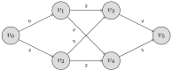
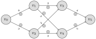
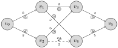

In this section, we consider an algorithm which solves for the maximum flow. We also discuss cuts, and show how duality connects flows and cuts.
Exploration7.2.1.
Recall Exploration 7.1.1. Suppose that we wish to install a toll booth on these bridges so that each person going to \(v_5\) pays a toll at least once. The cost of installing a toll booth on a bridge is proportional to it’s capacity.
(a)
Find three different ways to install these booths, and find what you believe is the cheapest way to do so.
Definition7.2.2.
Given a capacitated network \(N\text{,}\) a cut of \(N\) is a partition of the vertex set into non-empty subsets \(C=(V_1, V_2)\text{,}\) where \(V=V_1\sqcup V_2, v_s\in V_1, v_d\in V_2\text{.}\)
The capacity of a cut \(C\) is the sum \(\displaystyle \sum_{v_i\in V_1, v_j\in V_2} c_{ij}\text{.}\)
Activity7.2.3.
(a)
From Exploration 7.1.1, find three different cuts and their capacities.
(b)
What cut do you think minimizes the capacity, how does this compare to your conjectured max flow for this problem?
Activity7.2.4.
Consider the primal maximization problem for a max flow problem for a capacitated network with unique source \(v_s\) and unique sink \(v_d\text{:}\)
\begin{align*}
\textbf{Maximize: } \displaystyle \sum_{i} x_{id}\\
\textbf{subject to: } \sum_{i}x_{ij} - \sum_{i} x_{ji} \amp = 0, \text{for each vertex }v_j\\
x_{ij}\amp \leq c_{ij}, \text{for each edge} (v_i, v_j)\\
x_{ij}\amp \geq 0, \text{for each edge} (v_i, v_j).
\end{align*}
(a)
Consider the dual problem for this maximization problem where \(\mu_{j}\) is the unconstrained dual variable for the vertex equality constraint and the \(y_{ij}\) is the dual variable for the capacity constraint. Verify that this problem may be written as
Suppose \(\mu_j=-1\text{.}\) What could \(\mu_i, y_{ij}\) be? What value for \(\mu_i\) would minimize the dual objective function? What happens if \(\mu_i\) is huge, how would that affect \(-\mu_k+\mu_i+y_{ki}\text{?}\)
Repeat for \(\mu_i=0, \mu_j=-1, 0\text{.}\)
(d)
Suppose each \(\mu_k\in \{0, -1\}\text{,}\) Note that \(V_1:=\{v_i:\mu_i=0\}, V_2:=\{v_j:\mu_j=-1\}\) forms a cut of \(N\text{.}\)
For \(v_i, v_j\in V_1\text{,}\) what is \(y_{ij}\text{?}\)
For \(v_i, v_j\in V_2\text{,}\) what is \(y_{ij}\text{?}\)
For \(v_i\in V_1, v_j\in V_2\text{,}\) what is \(y_{ij}\text{?}\)
Can any cut of \(N\) be modeled this way?
(e)
What is the capacity of the above cut? How does that relate to the dual problem?
(f)
Prove that the maximum flow through a network is bounded above by the minimum cut capacity.
Activity7.2.5.
We explore a way of generating potential minimum cuts using a maximum flow.
Recall Exploration 7.1.1 and your proposed maximum flow \(f'\text{.}\)
(a)
Let \(v_0\in V_1'\text{,}\) we recursively define \(V_1'\) by adding \(v_j\) to \(V_1'\) if either:
\(v_i\in V_1', (v_i,v_j)\in E, x'_{ij}\lt c_{ij}\text{.}\)
\(v_i\in V_1', (v_j,v_i)\in E, x'_{ji}>0\text{.}\)
(b)
Let \(V_2':=V\backslash V_1'\text{.}\) What is the cut capacity of \((V_1', V_2')\text{?}\)
Activity7.2.6.
We now prove that the minimum cut capacity is equal to the maximum flow.
(a)
Why does the primal max problem achieve optimality?
Call the maximum flow \(f'\text{,}\) with flow on each edge \(x_{ij}'\text{.}\)
(b)
Let \(v_s\in V_1'\text{,}\) we recursively define \(V_1'\) by adding \(v_j\) to \(V_1'\) if either:
\(v_i\in V_1', (v_i,v_j)\in E, x'_{ij}\lt c_{ij}\text{.}\)
\(v_i\in V_1', (v_j,v_i)\in E, x'_{ji}>0\text{.}\)
and repeating until we stabilize, why must we eventually stabilize?
(c)
Show that for any \(v_k\) in \(V'_1\text{,}\) there is an \(\alpha\)-path \(P\text{:}\) a sequence of vertices starting \(v_s\) to \(v_k\text{,}\) where between \(v_{i}, v_j\) either \((v_i, v_j), (v_j, v_i)\in E\text{.}\)
We would call the edges \((v_i, v_j)\) to be forward edges and \((v_j, v_i)\) backwards edges of \(P\text{.}\)
(d)
Suppose (by way of contradiction) that \(v_d\in V_1'\text{.}\) There is by (c) an \(\alpha\)-path \(P\) from \(v_s\) to \(v_d\text{.}\)
Let
\begin{equation*}
q:=\min \left\{\min_{(v_i, v_j)\text{ a forward edge}} \{c_{ij}-x'_{ij}\}, \min_{(v_j, v_i)\text{ a backwards edge}} \{x'_{ji}\} \right\}.
\end{equation*}
Why is \(q>0\text{?}\)
(e)
We define a new flow \(f''\) as follows: for each forward edge of \(P\text{,}\)\((v_i, v_j)\text{,}\) we add \(x_{ij}''=q+x'_{ij}\text{.}\) For each backwards edge \((v_j, v_i)\) we subtract \(x_{ji}'' = x'_{ji}-q\text{.}\)
Explain why this is still a valid network flow.
(f)
Explain why \(f''\) has a greater value than \(f'\text{.}\) Why must \(v_d\not \in V_1'\text{?}\)
(g)
Define \(V_2' = V\backslash V_1'\text{.}\) Prove that for any \(v_i\in V_1', v_j\in V_2'\text{,}\) we have that \(x_{ij}'=c_{ij}, x_{ji}=0\text{.}\)
(Not neccesary for this proof, but to tie things in, if \(x_{ij'}=c_{ij}\text{,}\) what does that say about \(y_{ij}\) from the dual problem in Activity 7.2.4? If \(x_{ij}'\lt c_{ij}\text{,}\) what does that say about \(y_{ij}\text{?}\) )
(h)
Use Activity 7.2.3 to show that the value of \(f'\) is equal to the cut capacity of \((V_1', V_2')\text{.}\) (Proving the result!)
(i)
Going back to Activity 7.2.4 if we let \(\mu_i=0\) for \(v_i\in V_1'\) and \(\mu_j=-1\) for \(v_j\in V_2'\text{,}\) what is the value of the dual min objective?
Theorem7.2.7.Max Flow-Min Cut.
Let \(N = (V, E)\) be a capacitated directed network with unique fixed source and unique fixed sink, no edges into the source, and no edges out of the sink. Then the value of the maximalflow from \(v_s\) to \(v_d\) is equal to the minimal cut capacity in \(N\text{.}\)
Activity7.2.8.
Suppose we had a non-optimal flow \(f\text{,}\) how could we adopt the procedure in Activity 7.2.6 to obtain a better flow?
Subsection7.2.1Algorithms for Max Flow and Min Cut
Exploration7.2.9.
Consider the following capacitated network with source \(v_0\) and sink \(v_5\text{:}\)

Recall the procedure to produce improved flows in Activity 7.2.6.
(a)
Begin with the zero-flow.

Consider the \(\alpha\)-path \(v_0v_2v_4v_5\text{.}\) Apply Activity 7.2.6 (d) to this path. What is \(q\text{?}\)
(b)
Adjust the flow on edges by \(q\) appropriately. Explain why we need not consider the edge \(v_2v_4\) for any future \(\alpha\)-paths.
(c)
Pick another \(\alpha\)-path where \(q>0\) and repeat until we achieve a maximum flow.
Hint.

(d)
Use the maximum flow and the argument in Activity 7.2.6 to find a minimum cut.
Definition7.2.10.Ford-Fulkerson Algorithm.
We describe an algorithm to find the maximum flow for \(N\text{,}\) a capacitated network with a unique source \(v_s\) and sink \(v_d\text{:}\)
INITIALIZE: We begin with any feasible flow \(f\) (including the zero flow.)
Pick an \(\alpha\)-path \(P\) in \(N\) from \(v_s\) to \(v_d\) such that:
Each forward edge of \(P\) satisfies \(x_{ij} \lt c_{ij}\text{.}\)
\begin{equation*}
q:=\min \left\{\min_{(v_i, v_j)\text{ a forward edge}} \{c_{ij}-x'_{ij}\}, \min_{(v_j, v_i)\text{ a backwards edge}} \{x'_{ji}\} \right\}.
\end{equation*}
Define a new flow \(f'\) as follows: for each forward edge of \(P\text{,}\)\((v_i, v_j)\text{,}\) we add \(x_{ij}'=q+x_{ij}\text{.}\) For each backwards edge \((v_j, v_i)\) we subtract \(x_{ji}' = x_{ji}-q\text{.}\)
Let \(f:=f'\) and GOTO 2
STOP. The flow is now optimal.
Activity7.2.11.
Prove that the Ford-Fulkerson Algorithm Definition 7.2.10 terminates at a maximum flow.
Definition7.2.12.Min Cut Algorithm.
We describe an algorithm to find the minimum for \(N\text{,}\) a capacitated network with a unique source \(v_s\) and sink \(v_d\text{:}\)
INITIALIZE: We begin with a maximum flow \(f'\) and \(V_1=\{v_s\}\text{.}\)
We add \(v_j\) to \(V_1\) if there is a \(v_i\in V_1\) such that either: